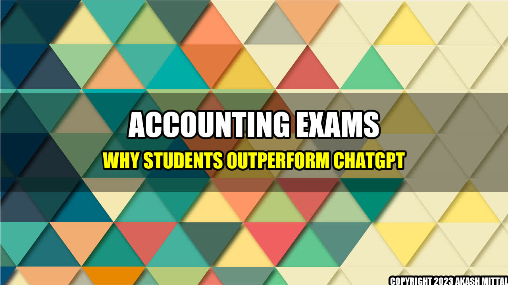

Accounting Exams: Why Students Outperform ChatGPT
As the use of artificial intelligence (AI) and machine learning becomes more prevalent in the education sector, there has been an increasing debate on the effectiveness of such technologies in improving students' academic performance. This raises the question: can ChatGPT, a popular AI language model, outperform human students in accounting exams?
To answer this, let's dive into a real-life example. Meet Chris, a freshman student majoring in accounting. Chris has always struggled with math and numbers, but he is determined to succeed. He attends all his lectures, takes extensive notes, and practices problems every day. Come exam time, Chris feels confident and prepared. His hard work pays off as he scores an A on his accounting exam.
On the other hand, we have ChatGPT, a language model trained on vast amounts of accounting data. It can analyze financial reports, predict trends, and even write papers on accounting. However, can ChatGPT replicate Chris's success on an accounting exam?
The answer is no. While ChatGPT is undoubtedly a powerful tool for analyzing financial data, it lacks the human touch that students like Chris bring to the table. Let's take a look at a few reasons why students outperform ChatGPT in accounting exams:
1. Understanding Concepts
Accounting is not just about memorizing formulas and procedures. It requires a deep understanding of concepts such as cash flow, inventory, and balance sheets. Students spend countless hours studying and applying these concepts to real-world scenarios, which helps them develop a comprehensive understanding of the subject. ChatGPT, on the other hand, can only process data based on what it has learned from previous reports and documents.
2. Critical Thinking
Accounting exams are designed to test a student's critical thinking and problem-solving skills. Students are presented with complex scenarios and asked to apply their knowledge to find solutions. This requires not only a solid understanding of accounting concepts but also the ability to analyze and evaluate information. ChatGPT, while capable of analyzing data, cannot reproduce the same level of critical thinking as a human student.
3. Adaptability
Finally, students have the ability to adapt to different exam formats and question types. They are exposed to a variety of exam formats such as multiple-choice, short answer, and essay questions, which helps them develop their exam-taking skills. ChatGPT, however, is limited to answering questions based on the data it has been trained on and may struggle to adapt to different formats.
In conclusion, while AI and machine learning have undoubtedly made significant contributions to the education sector, when it comes to accounting exams, students still have the upper hand. Students' ability to understand concepts, think critically, and adapt to different exam formats gives them an edge over ChatGPT. So if you're an accounting student, don't underestimate the value of hard work and persistence.
Social
Share on Twitter Share on LinkedIn